Four hours, one pavilion
Matte paintings: photographed snow and cliffs (CC0) relit around a pastel pavilion rendered in three.js. Every frame is symmetric and centred.
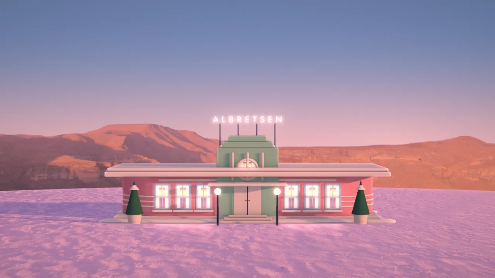
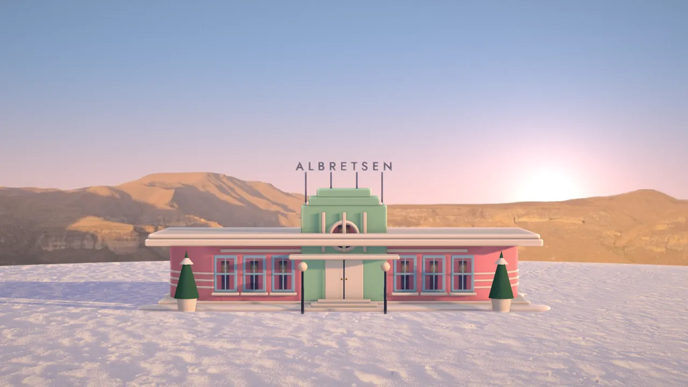
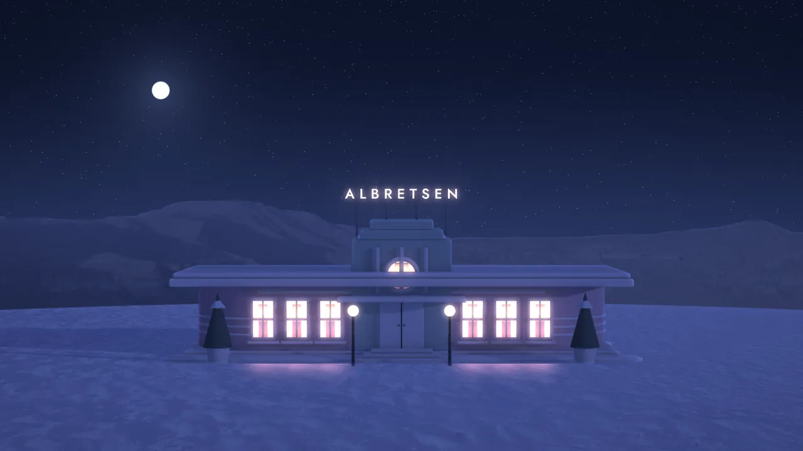
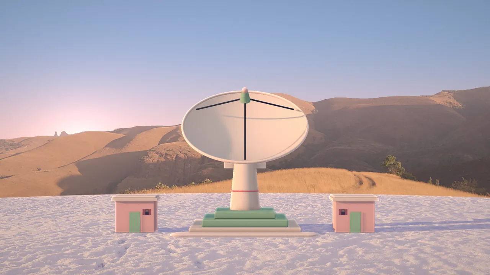
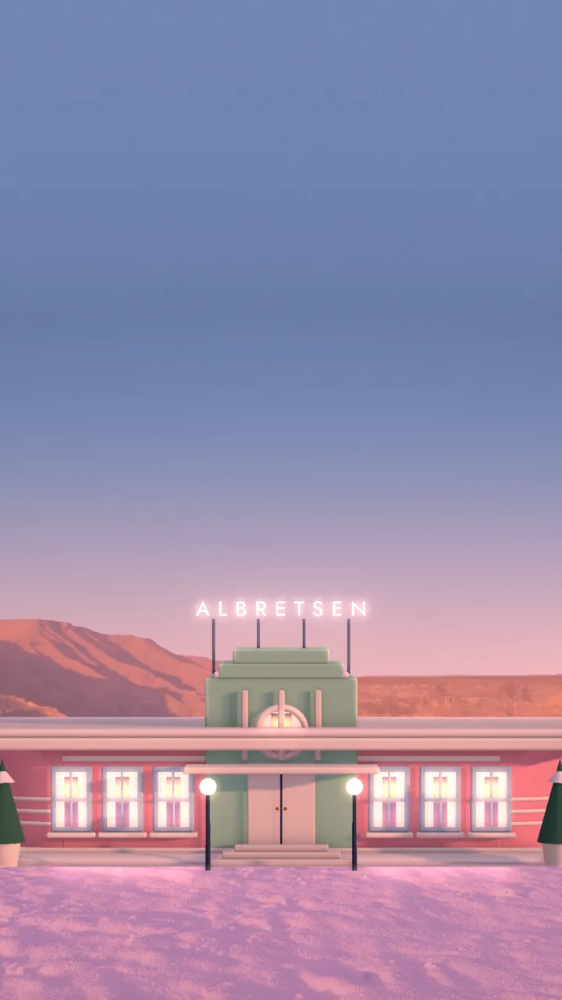
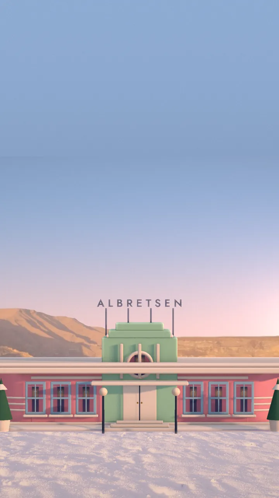
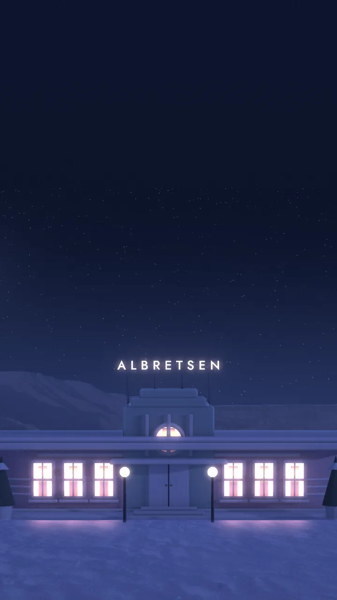
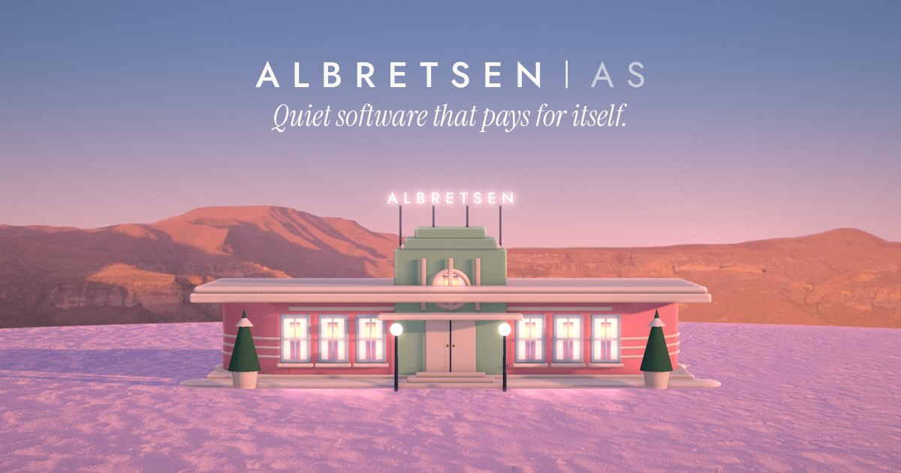
A window onto a low sun
The mark is an arched window, a sun on the horizon and three lines of snow. The wordmark is spaced signage capitals.
Deco pastels on snow
Flamingo, mint and sky over a warm white; ink and night for type and the dark theme.
Signage, voice, labels
tracking .34em
italic
body 17–19px
labels, code
Each product keeps its own hour
The real logos, on the signs of four small buildings in the same snowfield.
Texture and ephemera

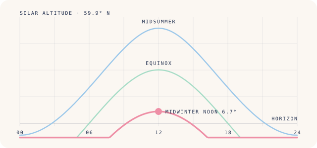

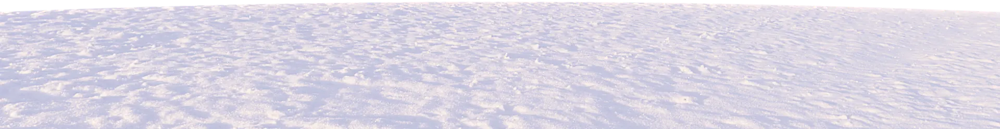
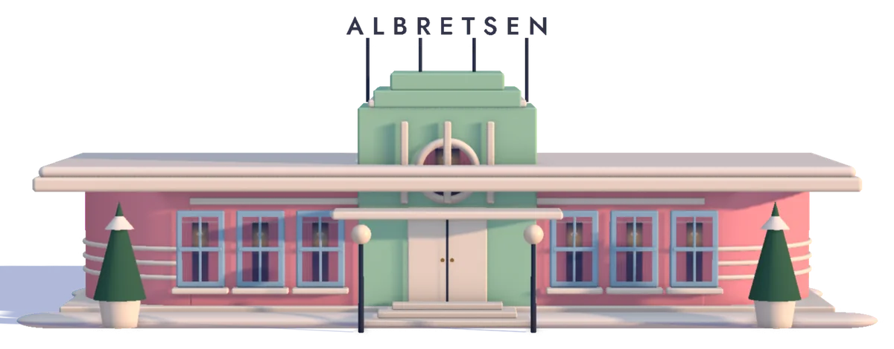
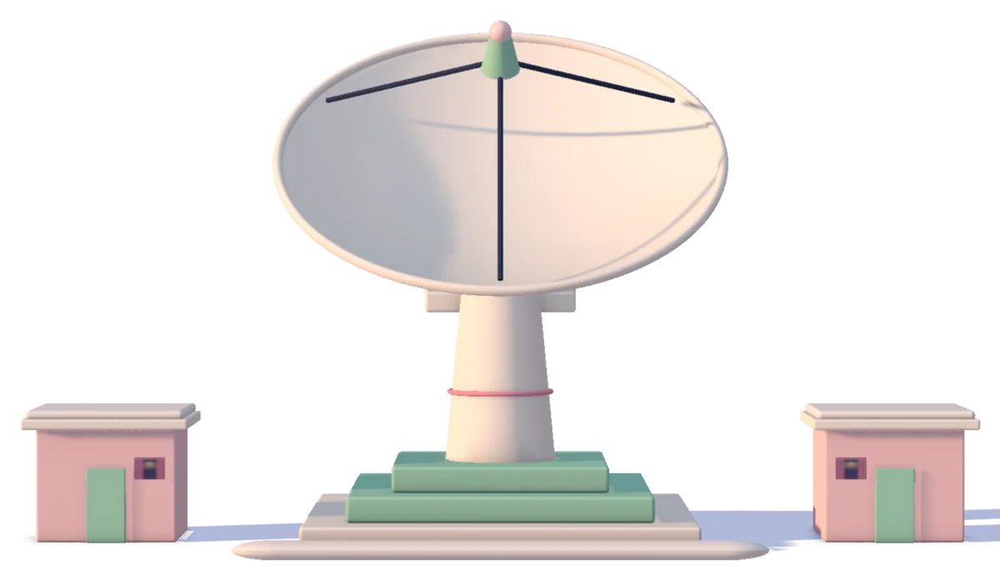
Slow, centred, once
- See below
Lens shift
Slow cinematic parallax through the matte layers: sky, cliffs, snow, building, each at its own depth. Scroll-driven animations with a JS fallback. After Keith Clark's pure-CSS parallax and the layered landscape headers of Firewatch.
Sign warm-up
Spaced capitals light letter by letter with a small irregularity, then glow, like a rooftop sign at dusk.
Iris
Day and night switch through a View Transition that opens like a film iris centred on the sun.
- Scroll it
Tracking shot
Product postcards glide sideways on one line while the page scrolls, a lateral dolly past a row of facades.
Snow hush
Sixty slow flakes, only at night, only in the hero; paused off screen.
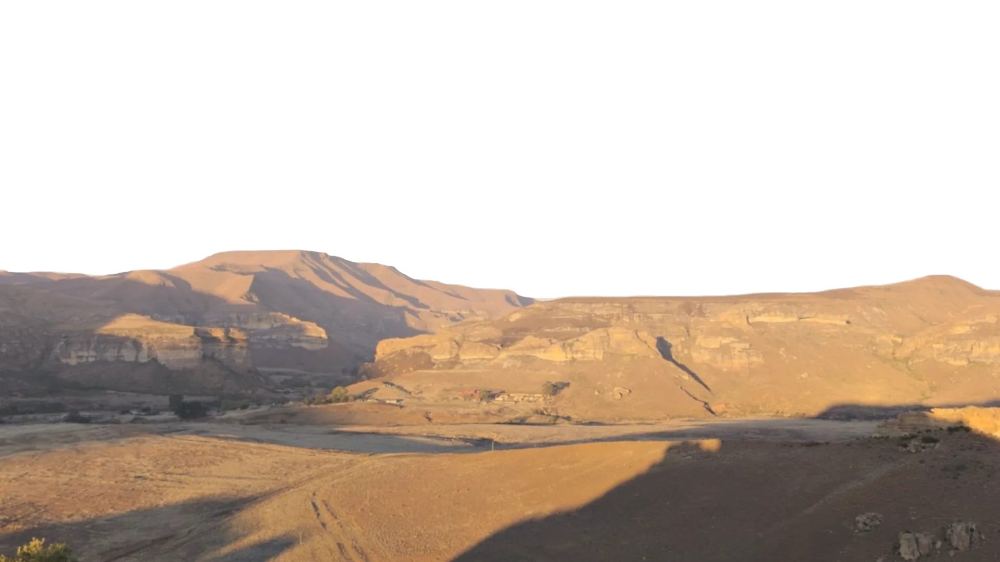
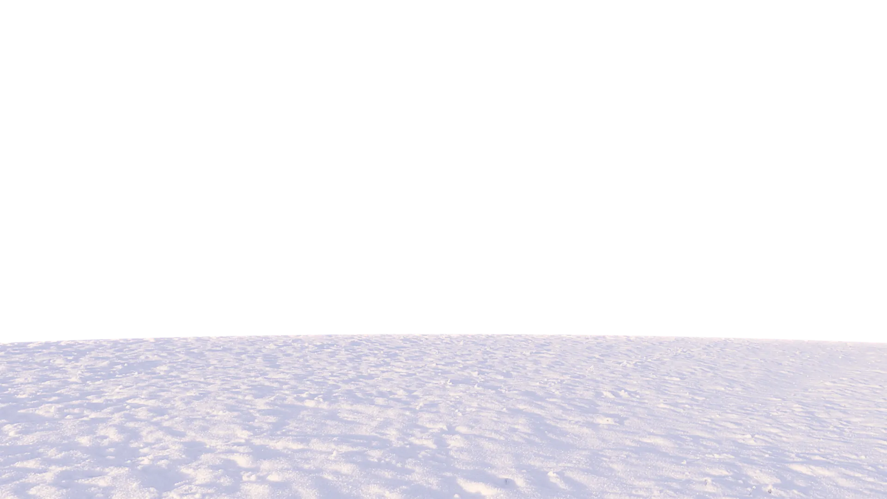
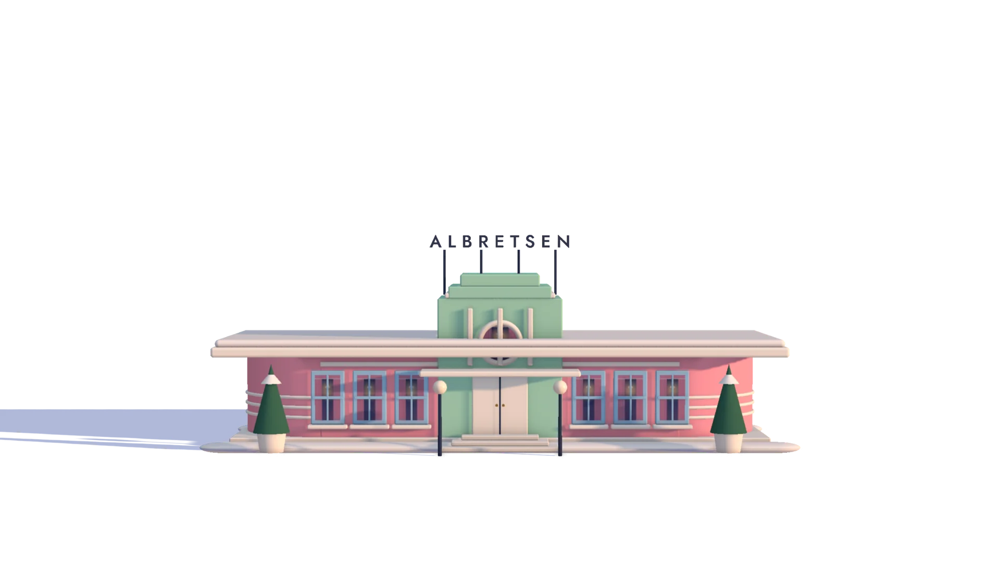
Sky Dial
A dependency-free WebGL2 compositor. The top of this page is one; here is the second scene. Drag the sky, or focus it and use the arrow keys.